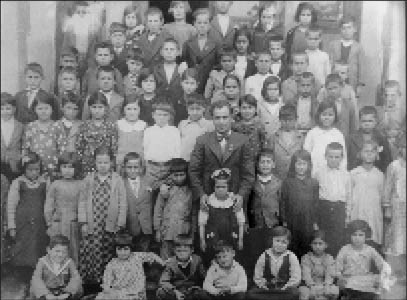

Memleket çocukları

Orhan Karabuda Arşivi
Herkes çocukluğunun kuşatması altındadır. Oraya sığınır, oraya koşar, oradan kaçar, oradan beslenir; oradakilere ağlar, orada yaşanan bir anıyla gülümser.
İnsan ne alırsa çocukluğunda alır.
Ne kazanırsa çocukluğunda kazanır, ne kaybederse çocukluğunda kaybeder.
Aslında hayatın öteki bölümleri çocukluğun uzantılarıdır.
Kâmil Aydoğan, Kısık Vadisi, (2012)